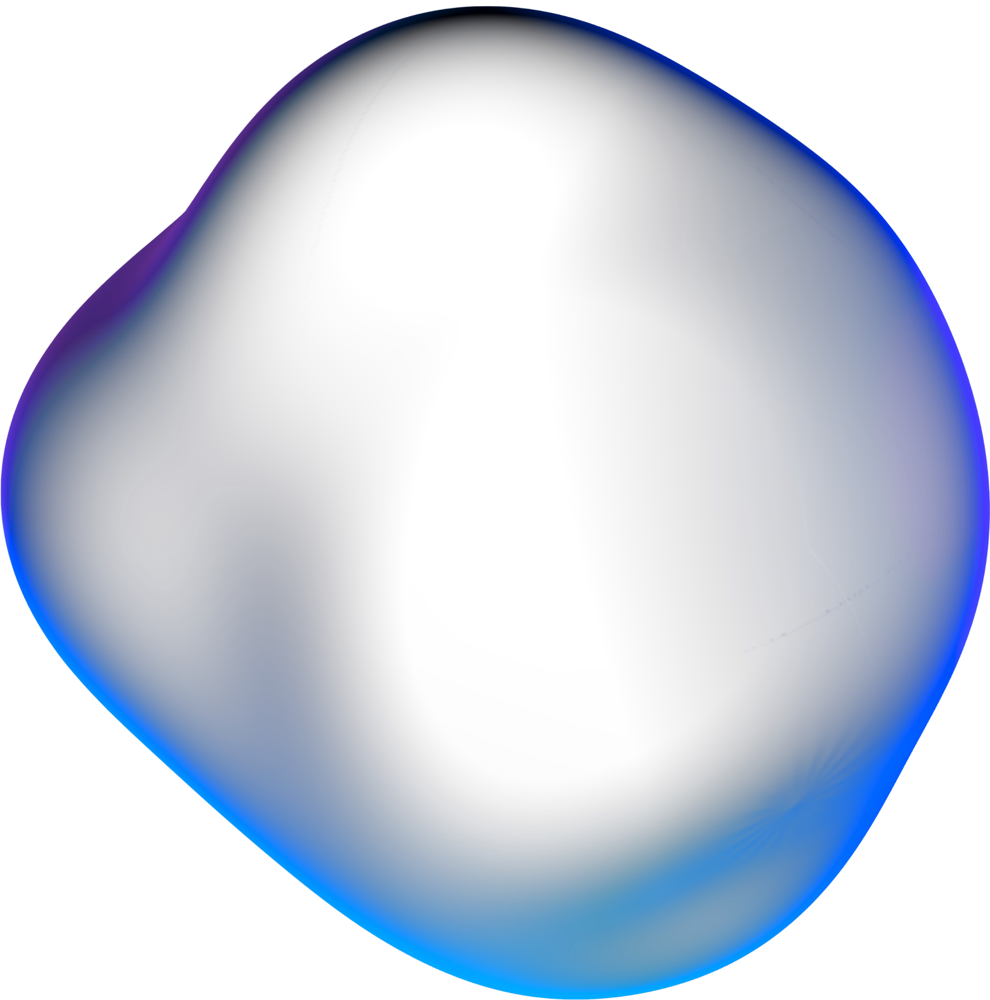

Hi
I am Ahmad Figo 👋
Possesses core expertise in UI/UX design, complemented by additional skills as a proficient front-end developer specializing in HTML, CSS, and JavaScript.

I am Ahmad Figo 👋
Possesses core expertise in UI/UX design, complemented by additional skills as a proficient front-end developer specializing in HTML, CSS, and JavaScript.